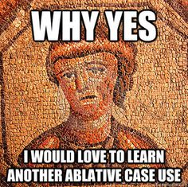

Basic Sentences
12.1 Atque nostris militibus cunctantibus, maxime propter altitudinem maris, (miles) X legionis aquilam in hostes gerebat.
(Caesar DBG 4.26. The Roman soldiers are in a tough spot. Slightly edited)
12.2 Erat ob has causas summa difficultas, quod naves propter magnitudinem nisi in alto constitui non poterant, militibus autem, ignotis locis, impeditis manibus, magno et gravi onere armorum oppressis…
(Caesar DBG 4.25. More rough times for the Romans)
q
12.3 Is M. Messala et M. Pisone consulibus regni cupiditate inductus coniurationem nobilitatis fecit
(Caesar DBG 1.2. Orgetorix has a plan)
12.4 Omnibus rebus ad profectionem comparatis diem dicunt,
(Caesar DBG 1.6. Helvetians set a date)
12.5 Vina, quae deinde cadis oneraverat bonus Acestes 195
litore Trinacrio dederatque abeuntibus heros,
Dividit, (Aeneas is the subject)
(Aeneid 1.195-197. Aeneas feeds his weary companions)
(The eagle bearer leads by example)

(Aeneas hands out food and wine to his companions)
Topics this Chapter
1. Pluperfect Tense
2. Ablative Absolute
3. Vocabulary

Pluperfect Tense
The pluperfect is formed in English with the auxiliary verb “HAD”, followed by the past participle of the main verb:
He had always wanted to travel in Africa. She had already left when Philippe arrived. I bought the book that Corinne had recommended to me. |
The pluperfect shows that the action has been done before another action (in the past). Adverbs such as "already" reinforce this impression.
She learned to love the dog that had bitten her the week before. When I got home, I had already heard the bad news. The children ate all the cookies that their father had bought. |
The most important thing when translating the pluperfect tense in English is to use the word “HAD”. It is the farthest back in time that can be described using the Latin language.
HAD! HAD! HAD!
Latin Forms:
Now that we also know the passive voice from the last chapter, we will have to tackle this in two waves just like the forms were introduced in Chapter 11.
First the pluperfect active:
3rd principal part (minus “i”) + pluperfect endings |
Amo, amare, amavi, amatus
+
Pluperfect Active Verb Endings | singular | plural |
1st person | -eram | -eramus |
2nd person | -eras | -eratis |
3rd person | -erat | -erant |
Pluperfect Active Verb Endings Example | singular | plural |
1st person | Amav+eram = amaveram | Amav+eramus = amaveramus |
2nd person | Amav+eras = amaveras | Amav+eratis = amaveratis |
3rd person | Amav+erat = amaverat | Amav+erant = amaverant |
Pluperfect Passive:
The pluperfect passive is even easier! All you do is the following:
4th principal part + imperfect form of “sum” It will be a two word verb! |
N.B. All perfect and passive verbs will be two words!!
Amo, amare, amavi, amatus
+
Pluerfect Passive Verb Endings | singular | plural |
1st person | eram | eramus |
2nd person | eras | eratis |
3rd person | erat | erant |
Pluperfect Passive Verb Endings Example | singular | plural |
1st person | Amatus eram | Amati eramus |
2nd person | Amatus eras | Amati eratis |
3rd person | Amatus erat | Amati erant |
You might even notice that it almost looks like the passive forms are an active form torn apart.
N.B. The first word of this verb will change endings to match the subject. You’ll notice “amati” and “amatus” in the singular. This could be different as well. If the subject were a woman, then it would be “amata” instead. This is the same for all Latin verbs that are two words.
To translate these forms we will keep the HAD helping verb that was used in the active voice but to make it passive the word “been” needs to be added.
Example:
Amatus erat = he had been loved.
The “HAD” indicates a pluperfect tense verb and the “BEEN” indicates that it’s passive.
Let’s take a look at Basic Sentence 12.5
Vina [bonus quae deinde cadis onerarat Acestes 195
litore Trinacrio dederatque abeuntibus heros],
Dividit
First notice that the relative clause is describing “vina” and the “quae” is delayed because poetry has that flexibility and that the verb deinde probably should be read with “dividit”. Can you notice the pluperfect verbs? Notice also that the PAP “abeuntibus” is describing a noun that is not written out so one must be provided.
He then divided the wine(s), which the good hero Acestes had carried in jars from the Sicilian shore and had given (it) to the departing (people).
Here are some helpful videos:
Pluperfect Active
Pluperfect Passive
Ablative Absolute
You might have noticed that the amount of Basic Sentence used to show off an Ablative Absolute was high. This is because the Ablative Absolute is one one of the most common grammatical constructions in Latin and it can be read in a lot of ways. Caesar uses this construction a great deal too.
English does not have an Ablative Absolute so it is sometimes difficult to draw an analogue. English does have a Nominative Absolute which Latin does not have. So, the best thing to start with is perhaps to describe what is meant by “Absolute”.
If a phrase is absolute it means this:
The phrase has no grammatical connection to the rest of the sentence. The phrase can be removed in its entirety and will not affect the rest of the sentence. |
Now, this does not mean that the phrase does not add meaning, just that grammatically the sentence will still survive without it.
ABLATIVE ABSOLUTE Noun(Pronoun) + Participle ALL IN THE ABLATIVE CASE |
The rule above does NOT mean that there cannot be more words in the Ablative Absolute, just that those are the things that are needed AT LEAST. Often times the noun and participle are the first and last word in the phrase forming a kind of bracket for the phrase since Latin didn’t use commas. This often irritates new students because this noun-participle pair can be separated by a great distance, but you’ll soon see that this is serving as punctuation. There is one exception to the rule that we’ll pick up at the end.
The ablatives of a participle and a noun (or pronoun) are used to form a substitute for a subordinate clause defining the circumstances or situation in which the action of the main verb occurs. An Ablative Absolute with a perfect passive participle is widely used in classical Latin to express the cause or time of an action:
EXAMPLES WITH A PPP Hīs verbīs dictīs, Caesar discēdit. With these words having been said, Caesar departs. Acceptīs litterīs, Caesar discēdit. With the letter having been received, Caesar departs.
Leōne vīsō, fēminae discessērunt. With the lion having been seen, the women departed. |
Equally common is an Ablative Absolute with a present active participle:
EXAMPLES WITH A PAP Leōne adveniente, fēmina discēssit. With the lion approaching, the woman left. |
On occasion, another noun may take the place of the participle in the Ablative Absolute construction. This is the exception that was referenced earlier. You’ll see this is Basic Sentence 12.3:
EXCEPTION Caesare duce vincēmus. With Caesar as leader, we shall conquer. |
Note: The noun (or pronoun) expressed in the Ablative Absolute is never the subject of the sentence. If we wish to say “When she was departing, the woman saw the lion,” we cannot use the Ablative Absolute, because the subject of each clause (“she” and “woman”) is the same. Instead, a simple participle is used: Fēmina discēdēns leōnem vīdit.
See if you can find and bracket all of the Ablative Absolute in the Basic Sentences.
Check out the video below for a good explanation of all of these possibilities.
Vocabulary Flash Cards
Word | Definition |
Deinde/dein | Then/next |
Volo, velle, volui | To want/wish |
Totus, a, um | Whole/entire |
Arma, armorum n | Weapons/arms |
Legio, legionis f | legion |
Propter + acc | Because of |
Gero, gerere, gessi, gestum | Bear/Manage/Wage (war) |
Navis, navis f | Ship |
Onus, oneris n | Burden |
Litus, litoris n | Shore |
Abeo, abire, abivi, abitum | To go away |
Vultus, us m | Look/Expression/Face |
Autem | however |
Quia | Because |
Ergo | Therefore |
Miser, misera, miserum | Miserable/wretched |
Saepe | Often |
Os, oris n | Mouth/face |
Ignis, ignis m | Fire |
Vivo, vivere, vixi, victum | To live |
Present | Imperfect | Future | Perfect | Pluperfect |
amat | ||||
dat | ||||
necatur | ||||
habemus | ||||
videntur | ||||
regis | ||||
potest |